Topological coloring¶
Greedy or topological coloring (or sequential coloring) is a cartographic method of assigning colors to polygons (or other geometries, mapclassify.greedy supports all geometry types) in such a way, that no two adjacent polygons share the same color.
greedy is a small toolkit within mapclassify providing such a functionality on top of GeoPandas GeoDataFrames. mapclassify.greedy() is all we need.
from mapclassify import __version__, greedy
__version__
'2.11.1.dev6+g7d7b2e214'
import geopandas
import seaborn
seaborn.set()
Few of greedy’s methods of coloring require either measuring of areas or distances. To obtain proper values, our GeoDataFrame needs to be in a projected CRS. Let’s use Africa and reproject it to ‘ESRI:102022’:
world = geopandas.read_file(
"https://naciscdn.org/naturalearth/110m/cultural/ne_110m_admin_0_countries.zip"
)
africa = world.loc[world.CONTINENT == "Africa"]
africa = africa.to_crs("ESRI:102022")
ax = africa.plot(figsize=(8, 12), edgecolor="w")
ax.set_axis_off()
Default¶
The default usage of greedy is extremely simple. Greedy returns a Series with color codes, so we can assign it directly as a new column of our GeoDataFrame:
africa["greedy_default"] = greedy(africa)
africa["greedy_default"].head(5)
1 1
2 0
11 0
12 1
13 4
Name: greedy_default, dtype: int64
Using resulting color codes as plotting categories gives us following the plot:
ax = africa.plot(
figsize=(8, 12),
column="greedy_default",
categorical=True,
cmap="Set3",
legend=True,
edgecolor="w",
)
ax.set_axis_off()
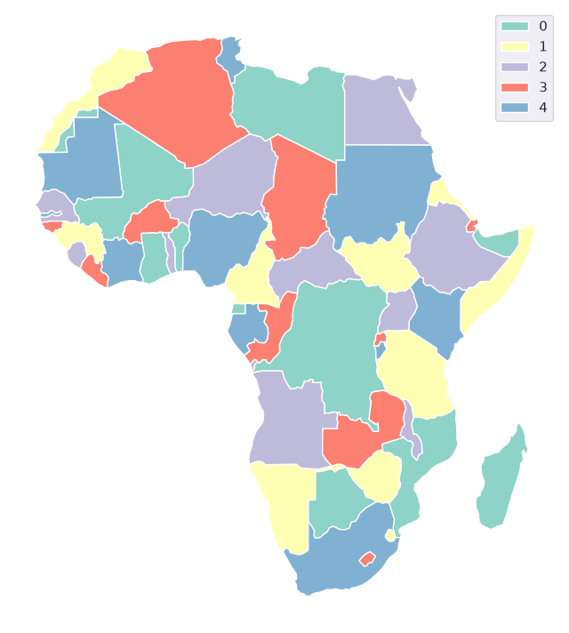
Strategies¶
Balanced¶
Greedy offers several strategies of coloring. The default strategy is balanced based on count attempting to balance the number of features per each color. Other balanced modes are area (balance the area covered by each color), distance and centroid (both attemtps to balance the distance between colors). Each of them attempt to balance the color assignment according to different conditions and hence can result in a different number of colors.
africa = africa.reset_index(drop=True)
africa["greedy_area"] = greedy(africa, strategy="balanced", balance="area")
ax = africa.plot(
"greedy_area",
categorical=True,
figsize=(8, 12),
cmap="Set3",
legend=True,
edgecolor="w",
)
ax.set_axis_off()
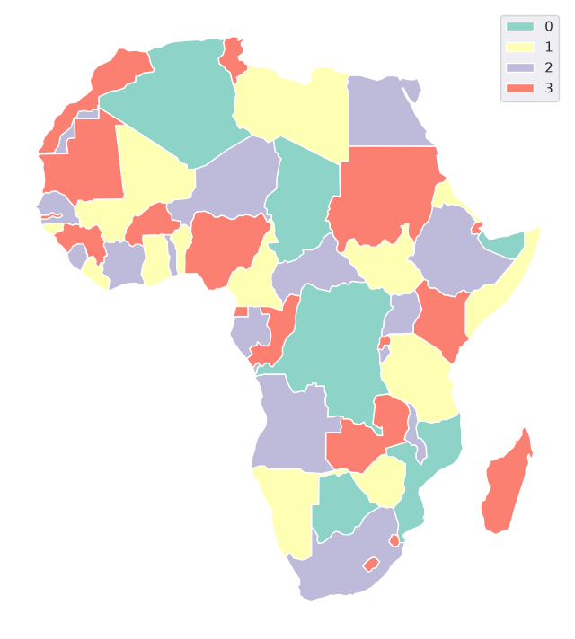
Different modes of balancing within the balanced strategy can be set using the balance keyword.
africa["greedy_distance"] = greedy(africa, strategy="balanced", balance="distance")
ax = africa.plot(
"greedy_distance",
categorical=True,
figsize=(8, 12),
cmap="Set3",
legend=True,
edgecolor="w",
)
ax.set_axis_off()
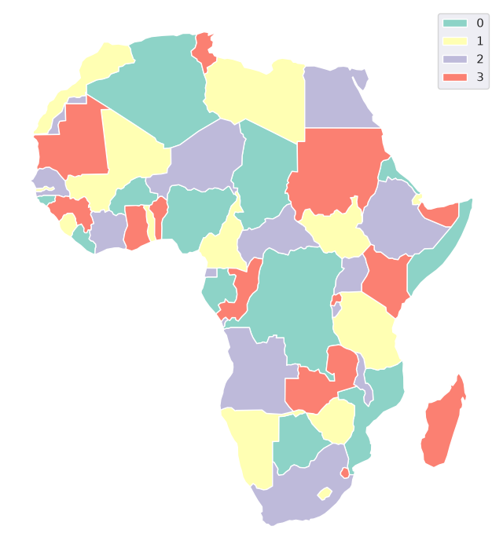
NetworkX strategies¶
On top of four modes of balanced coloring strategy, greedy offers all networkx.greedy_coloring() strategies, like largest_first:
africa["greedy_largest_first"] = greedy(africa, strategy="largest_first")
ax = africa.plot(
"greedy_largest_first",
categorical=True,
figsize=(8, 12),
cmap="Set3",
legend=True,
edgecolor="w",
)
ax.set_axis_off()
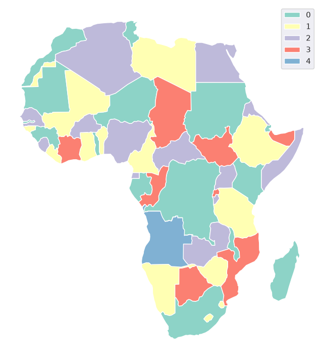
Another strategy provided by NetworkX is smallest_last. All strategies provide different results. Check Comparison of strategies below for details.
africa["greedy_s"] = greedy(africa, strategy="smallest_last")
ax = africa.plot(
"greedy_s",
categorical=True,
figsize=(8, 12),
cmap="Set3",
legend=True,
edgecolor="w",
)
ax.set_axis_off()
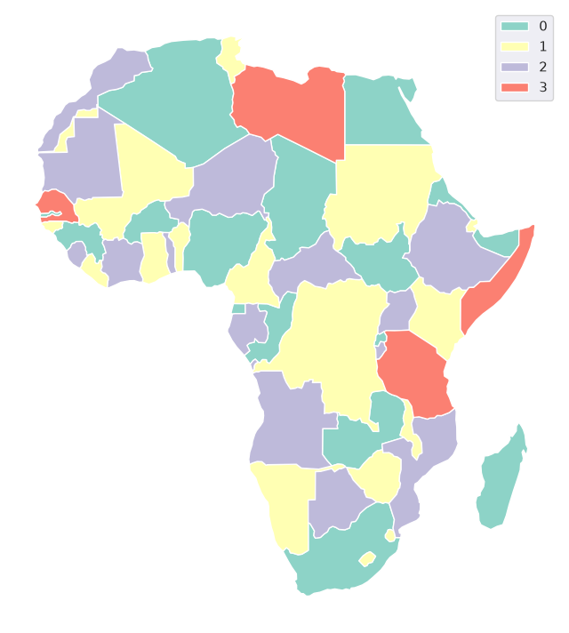
Greedy is variable in a way how to define adjacency and which coloring strategy to use. All options are described in this documentation together with comparison of their performance.
Defining adjacency¶
The key in toplogical coloring is the definition of adjacency, to understand which features are neighboring and could not share the same color. mapclassify.greedy comes with several methods of defining it. Binary spatial weights denoting adjacency are then stored as libpysal weights objects.
from shapely.geometry import Point
For illustration purposes, let’s generate a 10x10 mesh of square polygons:
def poly_lattice_gdf(dim, plot=False):
polys = []
for x in range(dim):
for y in range(dim):
polys.append(Point(x, y).buffer(0.5, cap_style=3))
_gdf = geopandas.GeoDataFrame(geometry=polys)
if plot:
ax = _gdf.plot(edgecolor="w")
ax.set_axis_off()
return _gdf
gdf = poly_lattice_gdf(10, plot=True)
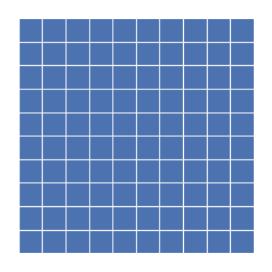
libpysal adjacency¶
The most performant way of generating spatial weights is using libpysal contiguity weights. As they are based on the shared nodes or edges, the dataset needs to be topologically correct. Neighboring polygons needs to share vertices and edges, otherwise their relationship will not be captured. There are two ways to define contiguity weights - "rook" and "queen".
Rook¶
Rook identifies two objects as neighboring only if they share at least on edge - line between two shared points. Use rook if you do not mind two polygons touching by their corners having the same color:
gdf["rook"] = greedy(gdf, sw="rook", min_colors=2)
ax = gdf.plot("rook", edgecolor="w", categorical=True, cmap="Set3")
ax.set_axis_off()
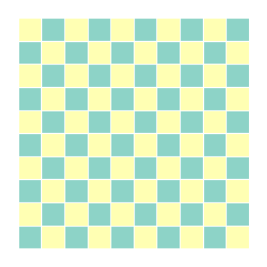
Queen¶
The default option in greedy is "queen" adjacency. Queen adjaceny identifies two objects as neighboring if they share at least one point. It ensures that even polygons sharing only one corner will not share a color:
gdf["queen"] = greedy(gdf, sw="queen", min_colors=2)
ax = gdf.plot("queen", edgecolor="w", categorical=True, cmap="Set3")
ax.set_axis_off()
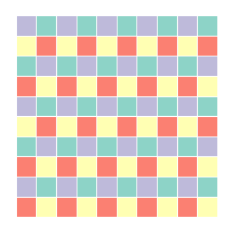
Intersection-based adjacency¶
As noted above, if the topology of the dataset is not ideal, libpysal might not identify two visually neighboring features as neighbors. greedy can utilize an intersection-based algorithm using GEOS intersection to identify if two features intersects in any way. They do not have to share any points. Naturally, such an approach is significantly slower (details below), but it can provide correct adjacency when libpysal fails.
To make greedy use this algorithm, one just needs to define min_distance. If it is set to 0, it behaves similarly to queen contiguity, just capturing all intersections:
gdf["geos"] = greedy(gdf, min_distance=0, min_colors=2)
ax = gdf.plot("geos", edgecolor="w", categorical=True, cmap="Set3")
ax.set_axis_off()
min_distance also sets the minimal distance between colors. To do that, all features within such a distance are identified as neighbors, hence no two features within the set distance can share the same color:
gdf["dist1"] = greedy(gdf, min_distance=1, min_colors=2)
ax = gdf.plot("dist1", edgecolor="w", categorical=True, cmap="Set3")
ax.set_axis_off()
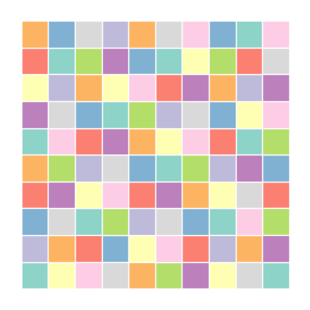
Reusing spatial weights¶
Passing libpysal.weights.W object to sw, will skip generating spatial weights and use the passed object instead. That will improve the performance if one intends to repeat the coloring multiple times. In that case, weights should be denoted using the GeodataFrame’s index.
Performance¶
The difference in performance of libpysal and GEOS-based method is large, so it is recommended to use libpysal if possible. Details of comparison between all methods are below:
import time
import numpy
import pandas
def run_greedy(_gdf, greedy_kws, min_colors=4, runs=5):
timer = []
for _ in range(runs):
s = time.time()
colors = greedy(_gdf, min_colors=min_colors, **greedy_kws)
e = time.time() - s
timer.append(e)
_mean_time = round(numpy.mean(timer), 4)
return _mean_time, colors
def printer(m, t, c):
print(f"\t{m}:\t", t, "s;\t", c + 1, "colors")
params = {
"rook": {"sw": "rook"},
"queen": {"sw": "queen"},
"geos": {"min_distance": 0},
"dist1": {"min_distance": 1},
}
times = pandas.DataFrame(index=params.keys())
steps = range(10, 110, 10)
for step in steps:
print(step, "----------------------------------------------")
gdf = poly_lattice_gdf(step, plot=False)
for method, kwargs in params.items():
mean_time, colors = run_greedy(gdf, kwargs, min_colors=2)
printer(method, mean_time, numpy.max(colors))
times.loc[method, step] = mean_time
10 ----------------------------------------------
rook: 0.0019 s; 2 colors
queen: 0.0019 s; 4 colors
geos: 0.0039 s; 4 colors
dist1: 0.0063 s; 10 colors
20 ----------------------------------------------
rook: 0.0068 s; 2 colors
queen: 0.0057 s; 4 colors
geos: 0.01 s; 4 colors
dist1: 0.0208 s; 10 colors
30 ----------------------------------------------
rook: 0.0128 s; 2 colors
queen: 0.0125 s; 4 colors
geos: 0.0199 s; 4 colors
dist1: 0.0468 s; 10 colors
40 ----------------------------------------------
rook: 0.0236 s; 2 colors
queen: 0.0466 s; 4 colors
geos: 0.0381 s; 4 colors
dist1: 0.09 s; 10 colors
50 ----------------------------------------------
rook: 0.0374 s; 2 colors
queen: 0.0375 s; 4 colors
geos: 0.0624 s; 4 colors
dist1: 0.1723 s; 10 colors
60 ----------------------------------------------
rook: 0.0543 s; 2 colors
queen: 0.0535 s; 4 colors
geos: 0.0978 s; 4 colors
dist1: 0.2621 s; 10 colors
70 ----------------------------------------------
rook: 0.0752 s; 2 colors
queen: 0.0944 s; 4 colors
geos: 0.1667 s; 4 colors
dist1: 0.392 s; 10 colors
80 ----------------------------------------------
rook: 0.1431 s; 2 colors
queen: 0.1201 s; 4 colors
geos: 0.2118 s; 4 colors
dist1: 0.6253 s; 10 colors
90 ----------------------------------------------
rook: 0.1471 s; 2 colors
queen: 0.1648 s; 4 colors
geos: 0.2989 s; 4 colors
dist1: 0.9696 s; 10 colors
100 ----------------------------------------------
rook: 0.2017 s; 2 colors
queen: 0.1906 s; 4 colors
geos: 0.4215 s; 4 colors
dist1: 1.44 s; 10 colors
times
| 10 | 20 | 30 | 40 | 50 | 60 | 70 | 80 | 90 | 100 | |
|---|---|---|---|---|---|---|---|---|---|---|
| rook | 0.0019 | 0.0068 | 0.0128 | 0.0236 | 0.0374 | 0.0543 | 0.0752 | 0.1431 | 0.1471 | 0.2017 |
| queen | 0.0019 | 0.0057 | 0.0125 | 0.0466 | 0.0375 | 0.0535 | 0.0944 | 0.1201 | 0.1648 | 0.1906 |
| geos | 0.0039 | 0.0100 | 0.0199 | 0.0381 | 0.0624 | 0.0978 | 0.1667 | 0.2118 | 0.2989 | 0.4215 |
| dist1 | 0.0063 | 0.0208 | 0.0468 | 0.0900 | 0.1723 | 0.2621 | 0.3920 | 0.6253 | 0.9696 | 1.4400 |
import matplotlib.pyplot as plt
ax = times.T.plot()
ax.set_ylabel("time (s)")
ax.set_xlabel("# of polygons")
locs, labels = plt.xticks()
plt.xticks(ticks=locs, labels=(times.columns**2)[:7], rotation="vertical");
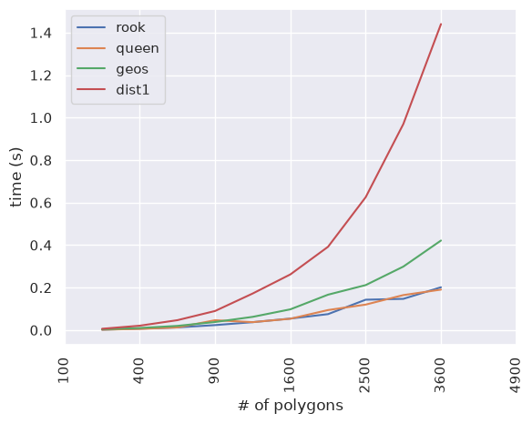
Plotting without the GEOS methods, the difference between queen and rook is minimal:
ax = times.loc[["rook", "queen"]].T.plot()
ax.set_ylabel("time (s)")
ax.set_xlabel("# of polygons")
locs, labels = plt.xticks()
plt.xticks(ticks=locs, labels=(times.columns**2)[:7], rotation="vertical");
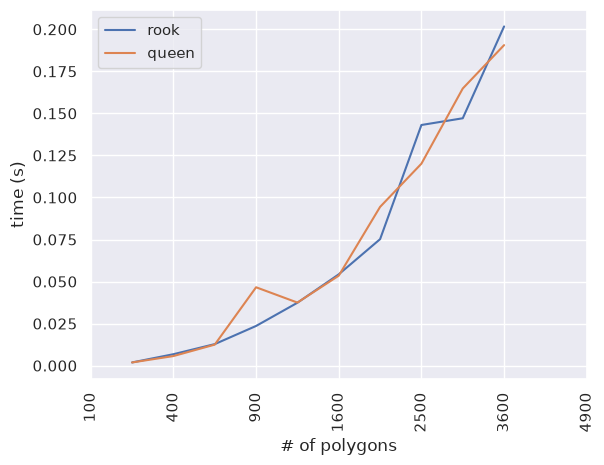
Comparison of strategies¶
Different coloring strategies lead to different results, but also have different performance. It all depends on the prefered goal.
If one want visually balanced result, 'balanced' strategy could be the right choice. It comes with four different modes of balancing - 'count', 'area', 'distance', and 'centroid'. The first one attempts to balance the number of features per each color, the second balances the area covered by each color, and the two last are based on the distance between features (either represented by the geometry itself or its centroid, which is a bit faster).
Other strategies might be helpful if one wants to minimize the number of colors as not all strategies use the same amount in the end. Or they just might look better on your map.
strategies = [
"balanced",
"largest_first",
"random_sequential",
"smallest_last",
"independent_set",
"connected_sequential_bfs",
"connected_sequential_dfs",
"saturation_largest_first",
]
balanced_modes = ["count", "area", "centroid", "distance"]
import warnings
import libpysal
sw = libpysal.weights.Queen.from_dataframe(
world, ids=world.index.to_list(), silence_warnings=True
)
Below is a comparison of performance and the result of each of the strategies supported by greedy.
When using the 'balanced' strategy with 'area', 'distance', or 'centroid' modes, keep in mind that your data needs to be in a projected CRS to obtain correct results. For the simplicity of this comparison, let’s pretend that dataset below is (even though it is not).
Strategies used in mapclassify.greedy have two origins - 'balanced' is ported from QGIS while the rest comes from NetworkX. The nippet below generates each option 20x and returns the mean time elapsed together with the number of colors used.
times = {}
with warnings.catch_warnings():
warnings.filterwarnings(
"ignore", message="Geometry is in a geographic CRS.", category=UserWarning
)
for strategy in strategies:
if strategy == "balanced":
for mode in balanced_modes:
stgy_mode = strategy + "_" + mode
print(stgy_mode)
kwargs = {"strategy": strategy, "balance": mode, "sw": sw}
mean_time, colors = run_greedy(world, kwargs, runs=20)
printer("time", mean_time, numpy.max(colors))
world[stgy_mode], times[stgy_mode] = colors, mean_time
else:
print(strategy)
kwargs = {"strategy": strategy, "sw": sw}
mean_time, colors = run_greedy(world, kwargs, runs=20)
printer("time", mean_time, numpy.max(colors))
world[strategy], times[strategy] = colors, mean_time
balanced_count
time: 0.0007 s; 5 colors
balanced_area
time: 0.0793 s; 5 colors
balanced_centroid
time: 1.9691 s; 5 colors
balanced_distance
time: 2.2232 s; 5 colors
largest_first
time: 0.0011 s; 5 colors
random_sequential
time: 0.001 s; 5 colors
smallest_last
time: 0.0021 s; 4 colors
independent_set
time: 0.0475 s; 5 colors
connected_sequential_bfs
time: 0.0012 s; 5 colors
connected_sequential_dfs
time: 0.0012 s; 5 colors
saturation_largest_first
time: 0.0166 s; 4 colors
As you can see, smallest_last and saturation_largest_first were able, for this particular dataset, to generate greedy coloring using only 4 colors. If one wants to use a higher number than the minimal, the 'balanced' strategy allows the setting of min_colors.
times = pandas.Series(times)
ax = times.plot(kind="bar")
ax.set_yscale("log")
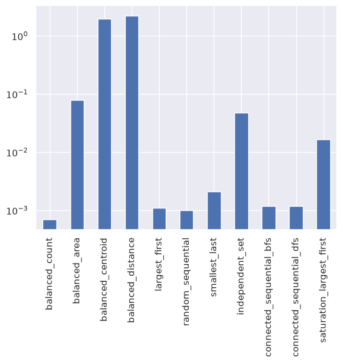
The plot above shows the performance of each strategy. Note that the vertical axis is using log scale.
Below are all results plotted on the map.
plt_kws = {"categorical": True, "figsize": (16, 12), "cmap": "Set3", "legend": True}
for strategy in times.index:
ax = world.plot(strategy, **plt_kws)
ax.set_axis_off()
ax.set_title(strategy)
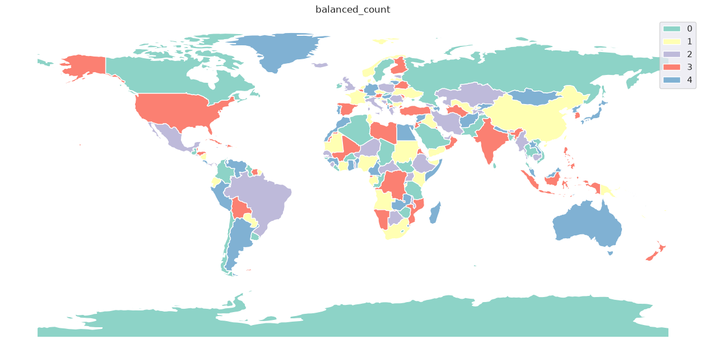
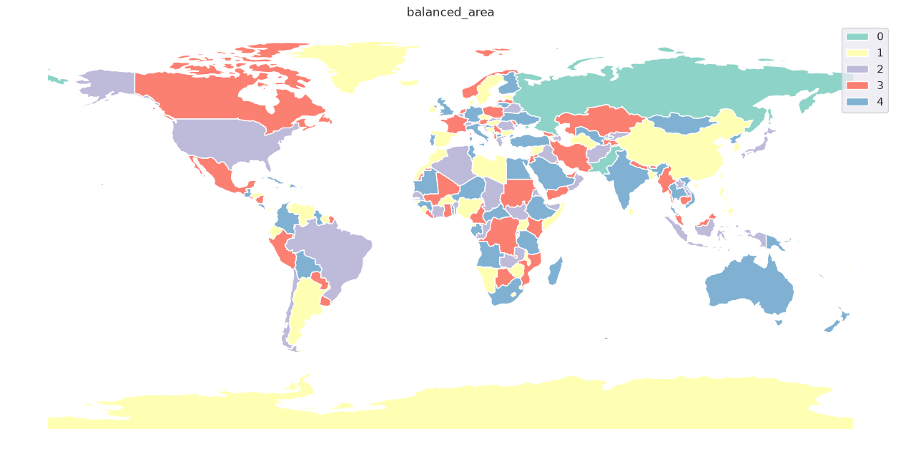
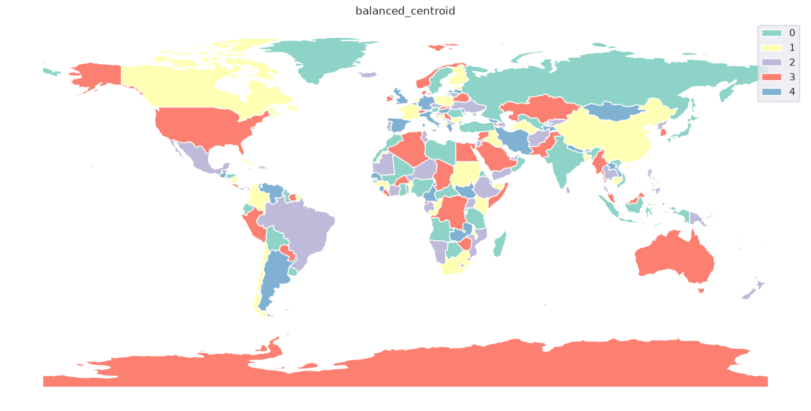
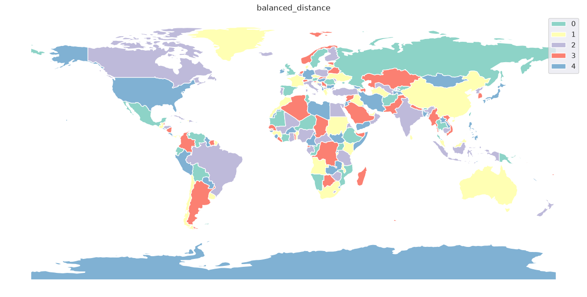
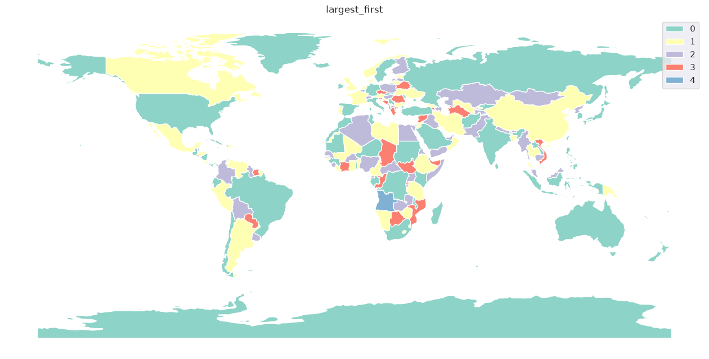
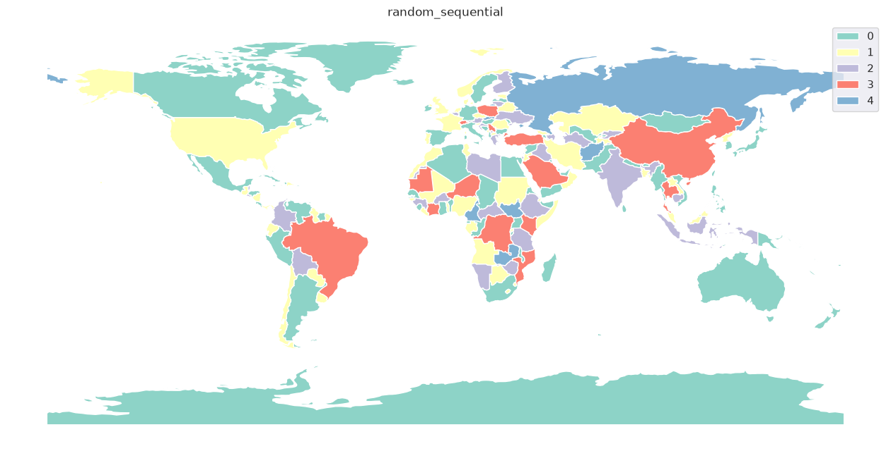
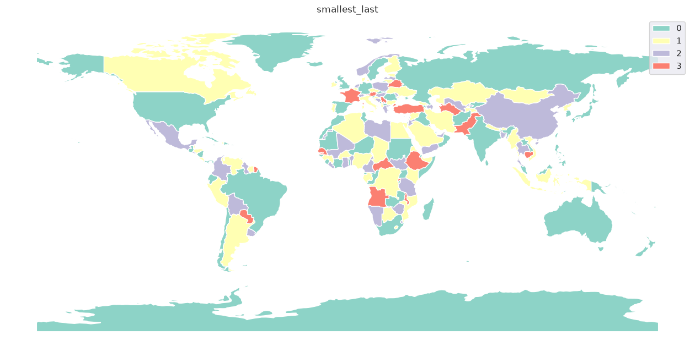
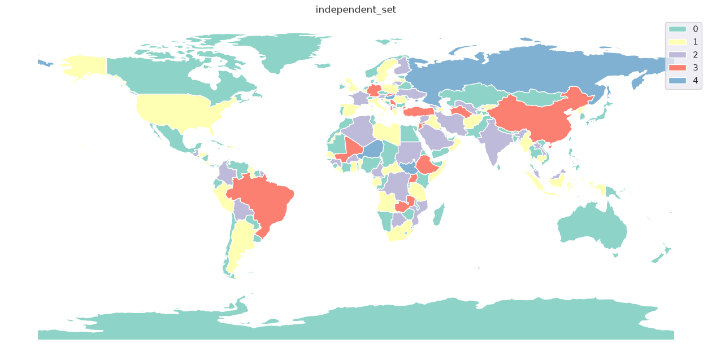
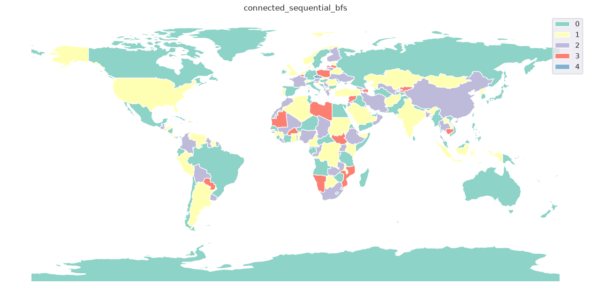
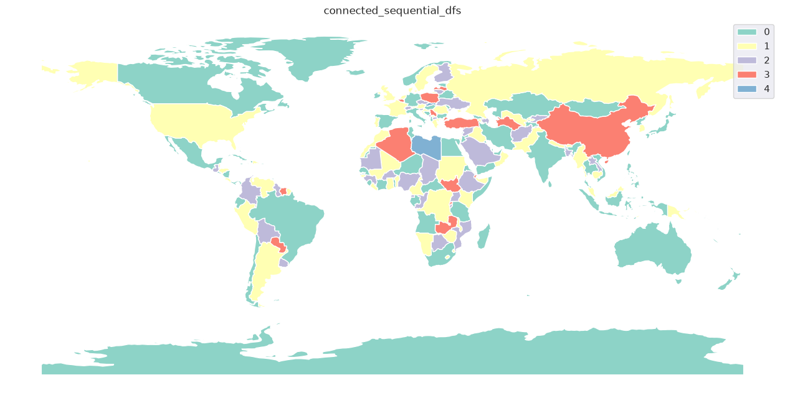
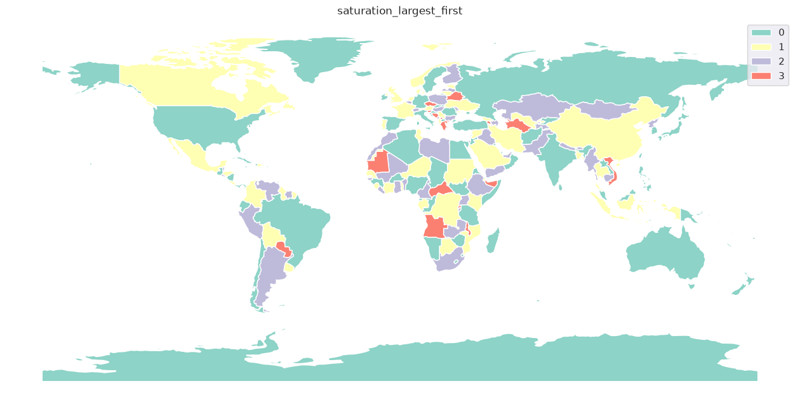